СИСТЕМА ПЕРЕДАЧИ ДАННЫХ LIN > КОНТАКТЫ ЭБУ |
| ПРОВЕРЬТЕ ГЛАВНЫЙ ЭБУ КУЗОВА (БОРТОВОЙ ЭБУ СЕТИ МУЛЬТИПЛЕКСНОЙ СВЯЗИ) И РАСПРЕДЕЛИТЕЛЬНЫЙ БЛОК СО СТОРОНЫ ВОДИТЕЛЯ В СБОРЕ |
| *A | Для моделей с левосторонним рулевым управлением | *B | Для моделей с правосторонним рулевым управлением |
Снимите главный ЭБУ кузова (бортовой ЭБУ сети мультиплексной связи) с распределительного блока со стороны водителя в сборе (Нажмите здесь).
Измерьте сопротивление и напряжение в соответствии со значениями, приведенными в таблице.
| Номера контактов (обозначения) | Цвет проводки | Описание контактов | Условие | Заданные условия |
| G63-3 (GND2) - масса | W-B - масса | Масса | Всегда | Менее 1 Ом |
| A-11 (GND1) - масса | Нет - масса | Масса | Всегда | Менее 1 Ом |
| A-30 (BECU) - масса | Нет - масса | Питание аккумуляторной батареи | Всегда | 11 – 14 В |
| A-32 (IG) - масса | Нет - масса | Источник питания IG | Зажигание включено | 11 - 14 В |
| ПРОВЕРЬТЕ ГЛАВНЫЙ ПЕРЕКЛЮЧАТЕЛЬ СЕТИ МУЛЬТИПЛЕКСНОЙ СВЯЗИ |
| 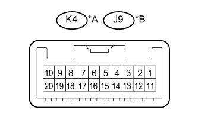 |
Отсоедините разъем K4*1 или J9*2 главного переключателя сети мультиплексной связи.
| *A | Для моделей с левосторонним рулевым управлением |
| *B | Для моделей с правосторонним рулевым управлением |
Измерьте сопротивление и напряжение в соответствии со значениями, приведенными в таблице.
| Номера контактов (обозначения) | Цвет проводки | Описание контактов | Условие | Заданные условия |
| K4-12 (GND) - масса | W-B - масса | Масса | Всегда | Менее 1 Ом |
| K4-11 (B) - масса | L - масса | Питание аккумуляторной батареи | Всегда | 11 – 14 В |
| Номера контактов (обозначения) | Цвет проводки | Описание контактов | Условие | Заданные условия |
| J9-12 (GND) - масса | W-B - масса | Масса | Всегда | Менее 1 Ом |
| J9-11 (B) - масса | L - масса | Питание аккумуляторной батареи | Всегда | 11-14 В |
| ПРОВЕРЬТЕ ЭЛЕКТРОДВИГАТЕЛЬ СТЕКЛОПОДЪЕМНИКА ЛЕВОЙ ПЕРЕДНЕЙ ДВЕРИ |
| 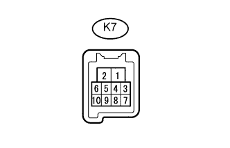 |
Отсоедините разъем K7 электродвигателя стеклоподъемника левой передней двери.
Измерьте сопротивление и напряжение в соответствии со значениями, приведенными в таблице.
| Номера контактов (обозначения) | Цвет проводки | Описание контактов | Условие | Заданные условия |
| K7-1 (GND) - масса | W-B - масса | Масса | Всегда | Менее 1 Ом |
| K7-2 (B) - масса | R - масса*1 G - масса*2 | Питание аккумуляторной батареи | Всегда | 11 – 14 В |
| ПРОВЕРЬТЕ ЭЛЕКТРОДВИГАТЕЛЬ СТЕКЛОПОДЪЕМНИКА ПРАВОЙ ПЕРЕДНЕЙ ДВЕРИ |
Отсоедините разъем J7 электродвигателя стеклоподъемника правой передней двери.
Измерьте сопротивление и напряжение в соответствии со значениями, приведенными в таблице.
| Номера контактов (обозначения) | Цвет проводки | Описание контактов | Условие | Заданные условия |
| J7-1 (GND) - масса | W-B - масса | Масса | Всегда | Менее 1 Ом |
| J7-2 (B) - масса | G - масса*1 R - масса*2 | Питание аккумуляторной батареи | Всегда | 11 – 14 В |
| ПРОВЕРЬТЕ ЭЛЕКТРОДВИГАТЕЛЬ СТЕКЛОПОДЪЕМНИКА ЛЕВОЙ ЗАДНЕЙ ДВЕРИ (для 5-дверных моделей) |
| 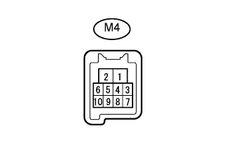 |
Отсоедините разъем M4 электродвигателя стеклоподъемника левой задней двери.
Измерьте сопротивление и напряжение в соответствии со значениями, приведенными в таблице.
| Номера контактов (обозначения) | Цвет проводки | Описание контактов | Условие | Заданные условия |
| M4-1 (GND) - масса | W-B - масса | Масса | Всегда | Менее 1 Ом |
| M4-2 (B) - масса | W - масса | Питание аккумуляторной батареи | Всегда | 11-14 В |
| ПРОВЕРЬТЕ ЭЛЕКТРОДВИГАТЕЛЬ СТЕКЛОПОДЪЕМНИКА ПРАВОЙ ЗАДНЕЙ ДВЕРИ (для 5-дверных моделей) |
Отсоедините разъем L4 электродвигателя стеклоподъемника правой задней двери.
Измерьте сопротивление и напряжение в соответствии со значениями, приведенными в таблице.
| Номера контактов (обозначения) | Цвет проводки | Описание контактов | Условие | Заданные условия |
| L4-1 (GND) - масса | W-B - масса | Масса | Всегда | Менее 1 Ом |
| L4-2 (B) - масса | W - масса | Питание аккумуляторной батареи | Всегда | 11-14 В |
| ПРОВЕРЬТЕ ПРИВОДНОЙ МЕХАНИЗМ ЛЮКА В СБОРЕ (для моделей с люком) |
| 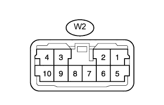 |
Отсоедините разъем W2 приводного механизма люка.
Измерьте сопротивление и напряжение в соответствии со значениями, приведенными в таблице.
| Номера контактов (обозначения) | Цвет проводки | Описание контактов | Условие | Заданные условия |
| W2-2 (E)- масса | W-B - масса | Масса | Всегда | Менее 1 Ом |
| W2-1 (B) - масса | W - масса | Питание аккумуляторной батареи | Всегда | 11 – 14 В |
| W2-5 (IG) - масса | L - масса | Источник питания IG | Зажигание включено | 11 - 14 В |
| ПРОВЕРЬТЕ ЭБУ СЕРТИФИКАЦИИ (для моделей с системой посадки и запуска) |
Отсоедините разъем G38 ЭБУ сертификации.
Измерьте сопротивление и напряжение в соответствии со значениями, приведенными в таблице.
| Номера контактов (обозначения) | Цвет проводки | Описание контактов | Условие | Заданные условия |
| G38-15 (E) - масса | W-B - масса | Масса | Всегда | Менее 1 Ом |
| G38-1 (+B) - масса | V - масса | Питание аккумуляторной батареи | Всегда | 11 – 14 В |
| G38-16 (IG) - масса | W - масса | Источник питания IG | Зажигание включено | 11 - 14 В |
| ПРОВЕРЬТЕ ЭБУ РАСПРЕДЕЛЕНИЯ ПИТАНИЯ (для моделей с системой посадки и запуска) |
Отсоедините разъем G51 ЭБУ распределения питания.
Измерьте сопротивление и напряжение в соответствии со значениями, приведенными в таблице.
| Номера контактов (обозначения) | Цвет проводки | Описание контактов | Условие | Заданные условия |
| G51-6 (GND) - масса | W-B - масса | Масса | Всегда | Менее 1 Ом |
| G51-5 (GND2) - масса | W-B - масса | Масса | Всегда | Менее 1 Ом |
| G51-1 (AM22) - масса | B - масса | Питание аккумуляторной батареи | Всегда | 11 – 14 В |
| G51-2 (AM21) - масса | B - масса | Питание аккумуляторной батареи | Всегда | 11 – 14 В |
| ПРОВЕРЬТЕ БЛОК ИДЕНТИФИКАЦИОННОГО КОДА (для моделей с системой посадки и запуска) |
Отсоедините разъем G37 блока идентификационного кода.
Измерьте сопротивление и напряжение в соответствии со значениями, приведенными в таблице.
| Номера контактов (обозначения) | Цвет проводки | Описание контактов | Условие | Заданные условия |
| G37-8 (GND) - масса | W-B - масса | Масса | Всегда | Менее 1 Ом |
| G37-1 (+B) - масса | V - масса | Питание аккумуляторной батареи | Всегда | 11-14 В |
| ПРОВЕРЬТЕ ПРИВОД БЛОКИРОВКИ РУЛЕВОГО УПРАВЛЕНИЯ (ЭБУ БЛОКИРОВКИ РУЛЕВОГО УПРАВЛЕНИЯ) (для моделей с системой посадки и запуска) |
| 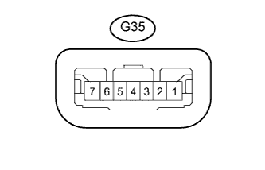 |
Отсоедините разъем G35 привода блокировки рулевого управления в сборе (ЭБУ блокировки рулевого управления).
Измерьте сопротивление и напряжение в соответствии со значениями, приведенными в таблице.
| Номера контактов (обозначения) | Цвет проводки | Описание контактов | Условие | Заданные условия |
| G35-1 (GND) - масса | W-B - масса | Масса | Всегда | Менее 1 Ом |
| G35-7 (B) - масса | G - масса | Питание аккумуляторной батареи | Всегда | 11 – 14 В |
| G35-6 (IG2) - масса | W - масса | Источник питания IG | Зажигание включено | 11 - 14 В |
| ПРОВЕРЬТЕ БЛОК УПРАВЛЕНИЯ СИСТЕМОЙ КОНДИЦИОНИРОВАНИЯ |
Отсоедините разъем G25 блока управления системой кондиционирования.
Измерьте сопротивление и напряжение в соответствии со значениями, приведенными в таблице.
| Номера контактов (обозначения) | Цвет проводки | Описание контактов | Условие | Заданные условия |
| G25-14 (GND) - масса | W-B - масса | Масса | Всегда | Менее 1 Ом |
| G25-21 (B) - масса | V - масса | Питание аккумуляторной батареи | Всегда | 11 – 14 В |
| G25-1 (IG+) - масса | L - масса | Источник питания IG | Зажигание включено | 11 - 14 В |
| ПРОВЕРЬТЕ ИНТЕГРИРОВАННУЮ ПАНЕЛЬ УПРАВЛЕНИЯ В СБОРЕ |
| 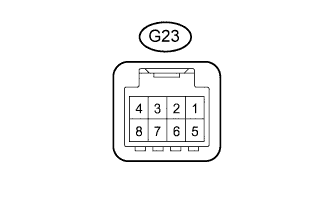 |
Отсоедините разъем G23 интегрированной панели управления.
Измерьте сопротивление и напряжение в соответствии со значениями, приведенными в таблице.
| Номера контактов (обозначения) | Цвет проводки | Описание контактов | Условие | Заданные условия |
| G23-4 (GND) - масса | W-B - масса | Масса | Всегда | Менее 1 Ом |
| G23-5 (IG) - масса | L - масса | Источник питания IG | Зажигание включено | 11 - 14 В |
| ПРОВЕРЬТЕ ПАНЕЛЬ УПРАВЛЕНИЯ СИСТЕМЫ КОНДИЦИОНИРОВАНИЯ В СБОРЕ (для моделей с задней системой кондиционирования) |
| 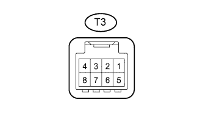 |
Отсоедините разъем T3 панели управления системы кондиционирования.
Измерьте сопротивление и напряжение в соответствии со значениями, приведенными в таблице.
| Номера контактов (обозначения) | Цвет проводки | Описание контактов | Условие | Заданные условия |
| T3-8 (E) - масса | W-B - масса | Масса | Всегда | Менее 1 Ом |
| T3-5 (IG) - масса | L - масса | Источник питания IG | Зажигание включено | 11 - 14 В |
| ПРОВЕРЬТЕ ДАТЧИК ДОЖДЯ (для моделей с датчиком дождя) |
| 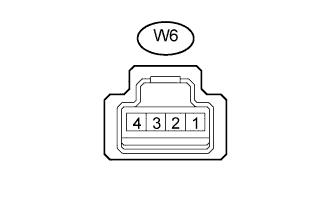 |
Отсоедините разъем W6 датчика дождя.
Измерьте сопротивление и напряжение в соответствии со значениями, приведенными в таблице.
| Номера контактов (обозначения) | Цвет проводки | Описание контактов | Условие | Заданные условия |
| W6-1 (ES) - масса | W-B - масса | Масса | Всегда | Менее 1 Ом |
| W6-4 (SIG) - масса | GR - масса | Источник питания IG | Зажигание включено | 11 - 14 В |
| ПРОВЕРЬТЕ РЕЛЕ СТЕКЛООЧИСТИТЕЛЯ ВЕТРОВОГО СТЕКЛА (для моделей с датчиком дождя) |
| 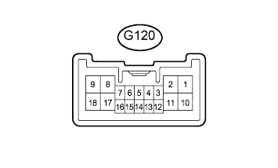 |
Отсоедините разъем G120 реле стеклоочистителя ветрового стекла в сборе.
Измерьте сопротивление и напряжение в соответствии со значениями, приведенными в таблице.
| Номера контактов (обозначения) | Цвет проводки | Описание контактов | Условие | Заданные условия |
| G120-1 (EW) - масса | W-B - масса | Масса | Всегда | Менее 1 Ом |
| G120-17 (+B) - масса | G - масса | Питание аккумуляторной батареи | Всегда | 11 – 14 В |
| G120-3 (WIG) - масса | G - масса | Источник питания IG | Зажигание включено | 11 - 14 В |
| Номера контактов (обозначения) | Цвет проводки | Описание контактов | Условие | Заданные условия |
| G120-9 (EW) - масса | W-B - масса | Масса | Всегда | Менее 1 Ом |
| G120-11 (+B) - масса | G - масса | Питание аккумуляторной батареи | Всегда | 11 – 14 В |
| G120-7 (WIG) - масса | G - масса | Источник питания IG | Зажигание включено | 11 - 14 В |
| Номера контактов (обозначения) | Цвет проводки | Описание контактов | Условие | Заданные условия |
| G120-1 (EW) - масса | W-B - масса | Масса | Всегда | Менее 1 Ом |
| G120-17 (+B) - масса | G - масса | Питание аккумуляторной батареи | Всегда | 11 – 14 В |
| G120-3 (WIG) - масса | G - масса | Источник питания IG | Зажигание включено | 11 - 14 В |
| ПРОВЕРЬТЕ РЕЛЕ СИСТЕМЫ ДВОЙНОЙ БЛОКИРОВКИ ДВЕРЕЙ (для моделей с системой двойной блокировки дверей) |
| 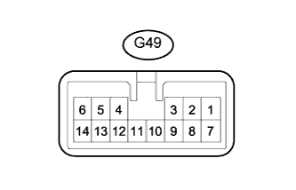 |
Отсоедините разъем G49 реле управления двойной блокировкой дверей в сборе.
Измерьте сопротивление и напряжение в соответствии со значениями, приведенными в таблице.
| Номера контактов (обозначения) | Цвет проводки | Описание контактов | Условие | Заданные условия |
| G49-14 (GND) - масса | W-B - масса | Масса | Всегда | Менее 1 Ом |
| G49-7 (CPUB) - масса | P - масса | Питание аккумуляторной батареи | Всегда | 11 – 14 В |
| G49-1 (+B) - масса | R - масса | Питание аккумуляторной батареи | Всегда | 11-14 В |
| ПРОВЕРЬТЕ ЭБУ ПЕРЕКЛЮЧАТЕЛЯ ПОМОЩИ ПРИ ДВИЖЕНИИ (для моделей с многофункциональным переключателем) |
| 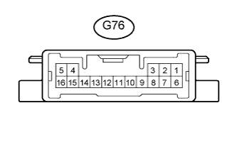 |
Отсоедините разъем G76 ЭБУ переключателя помощи при движении.
Измерьте сопротивление и напряжение в соответствии со значениями, приведенными в таблице.
| Номера контактов (обозначения) | Цвет проводки | Описание контактов | Условие | Заданные условия |
| G76-16 (GND) - масса | W-B - масса | Масса | Всегда | Менее 1 Ом |
| G76-6 (+B) - масса | L - масса | Питание аккумуляторной батареи | Всегда | 11 – 14 В |
| G76-7 (IG) - масса | L - масса | Источник питания IG | Зажигание включено | 11 - 14 В |
| ПРОВЕРЬТЕ ЩИТОК ПРИБОРОВ В СБОРЕ |
| 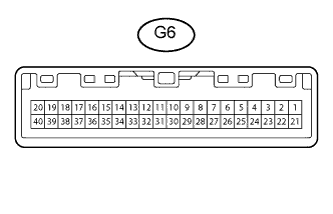 |
Отсоедините разъем G6 щитка приборов.
Измерьте сопротивление и напряжение в соответствии со значениями, приведенными в таблице.
| Номера контактов (обозначения) | Цвет проводки | Описание контактов | Условие | Заданные условия |
| G6-1 (EP) - масса | W-B - масса | Масса | Всегда | Менее 1 Ом |
| G6-26 (B) - масса | L - масса | Питание аккумуляторной батареи | Всегда | 11 – 14 В |
| G6-28 (IG+) - масса | R - масса | Источник питания IG | Зажигание включено | 11 - 14 В |
| ПРОВЕРЬТЕ ВСПОМОГАТЕЛЬНЫЙ ИНДИКАТОР (для моделей со вспомогательным индикатором) |
| 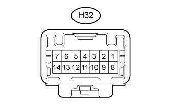 |
Отсоедините разъем H32 вспомогательного индикатора.
Измерьте сопротивление и напряжение в соответствии со значениями, приведенными в таблице.
| Номера контактов (обозначения) | Цвет проводки | Описание контактов | Условие | Заданные условия |
| H32-8 (GND) - масса | BR - масса | Масса | Всегда | Менее 1 Ом |
| H32-11 (IG) - масса | L - масса | Источник питания IG | Зажигание включено | 11 - 14 В |
| H32-12 (+B) - масса | L - масса | Питание аккумуляторной батареи | Всегда | 11-14 В |